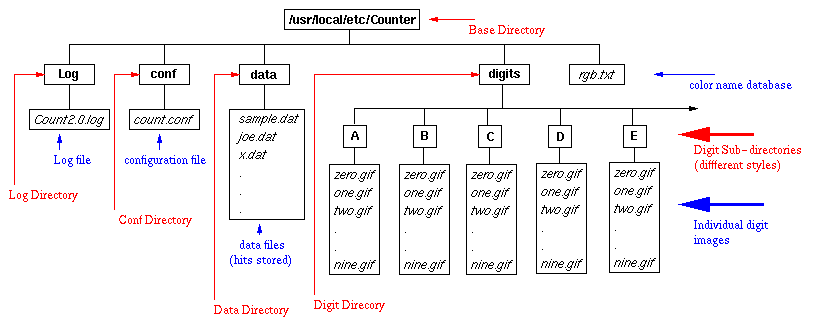
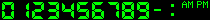
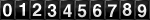
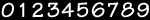
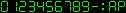

Latest Release: January 16, 1996
Initial Release: April 13, 1995
If you see the counter, clock or date image as 888888, then you are using a browser which can not be trusted. For untrusted browsers, no counter hit is recorded, no time or date is displayed and the literal digit string is displayed. This feature guarantees that the counter can not be accessed remotely to mess up the datafile from a browser like yours. I consider a browser untrusted if it does not return the environment variable HTTP_REFERER. Some entries in the log file are made including the browser type.Note, this strict mode of the program is experimental at this time. You can decide whether you want this option or not while you run the Count-config script.
muquit@semcor.com
subscribe counter
If anyone want to maintain a mailing list, go for it!
This version (2.2) is not ported to any OS yet. For NT and OS2 port, please visit the web page for Count 1.5.
This program is compiled and tested on a Sparc 10 (SunOS 4.1.4) running NCSA httpd 1.4 , CERN httpd 3.0, APACHE httpd 1.0, (gcc 2.6.3).
Count 1.5 runs on:
[Linux] | [Solaris 2.x] | [BSDI] | [SGI IRIX 5.3]
[AIX 3.2.5] | [HP-UX-?] | [Ultrix 4.3] | [SCO]
[AT&T Unix SVR4] | [DEC Alpha 3000/300L with OSF/1]
This version should be portable as well.
The program is distributed as a gzip'd tar archive. If you do not have gzip/gunzip, it's available at: prep.ai.mit.edu.
This machine is getting enormous number of ftp requests lately. Therefore, I had to impose a limit of maximum 10 ftp connections at one time. The limit will go up to 50 maximum connections at 11:00 PM US Easern Statndard Time and go back to 10 maximum connections at 6:00 AM US Eastern Standard Time.
Sorry for the inconvenience!
gunzip < wwwcount2.2.tar.gz | tar xvf -
cd wwwcount2.2
The program will compile with ANSI or non-ANSI C compiler.

Base Directory is the directory where all the sub-drectories and the files releated to counter reside.
Log Directory is the directory which holds the counter Log file. Counter error messages or if someone tries to acces your counter remotely, warning message regarding this is written to this file.
conf directory holds the configuraion file for the counter. The configuration file holds information in 2 blocks. Each block resides between a left and right curly brace. The first block is called "ignore hosts" block. "ignore hosts" block defines the IP addresses of the hosts to ignore from counting. For example, if a user is running the web browser at the host 192.160.166.100 and if 192.160.166.10 is present at this block, the counter will be displayed but not incremented. You might want to put your own IP address here. The second block is authentication block. This block contains the hostnames, IP addresses, aliases for the hosts if any. All hosts present on this block will be able to access the counter locally or remotely, if others try to access, they will be denied. This file is created by the program Gen-conf and can be hand crafted later.
data directory holds all the datafiles for the counter. The datafiles stores the access counts of web pages. Each page must have a separate datafile. The datafile is specified at run-time. You will know about it later.
digits directory holds sub-drectories with various styles of GIF digits. For example, A sub-directory holds the green led digits. The sub-directories have GIF digit files named zero.gif, one.gif...nine.gif. you will know about it later.
rgb.txt file is used to convert a color name (for example, cyan) to the appropriate red, green and blue color component. This file came from X consortium and supplied with the distribution. You will know about the file later.
| Style A |  |
designed by me (digits/A) can be used for clock or date. |
|---|---|---|
| Style B |  | Borrowed from HTML-access counter. (digits/B) |
| Style C |  | designed by benjamin@pop3.oro.net (digits/C) |
| Style D |  |
designed by me (digits/D) can be used for clock or date. |
| Style E |
designed by me (digits/E) can be used for clock or date. |
A suggested use of style E is to make the white color transparent (you will know about transparency later).
For a huge collection of GIF digits, check out the Digit Mania page.
This program will work with any digits from the Digit Mania page. To use those digits, create subdirectories say, F,G, H etc. inside the digits directory and rename the images to zero.gif, one.gif..nine.gif. To use those digits for clock or time, make sure you have or create am.gif, pm.gif, colon.gif and dash.gif.
Count-config
script to generate the header file config.h, a variable
template file for install program.
configrue
script to generate correct Makefiles for any Unix system.
Gen-conf
script to generate the configuration file.
Count-install
script to install the Count binary Count.cgi, digit images, configuration
file and the rgb color name database to the correct places.
Now at the shell prompt (shell prompt is where you type ls, read your mails etc.), type the following commands in the described order and press Return key:
If you finished all the above steps successfully, you are ready to test the counter. Go to the next section.
./testcount-sh
<img src="/cgi-bin/Count.cgi?df=sample.dat" align=absmiddle>
* Allow automatic data file creation [y|n]?
If you answered yes, you can specify a datafile with df like df=count.dat. The file count.dat will be created for you if the permision to the data directory is correct.
If you answered no, you have to create this file in the data directory. cd to the data directory and type:
echo 1 > count.dat
<img src="/cgi-bin/Count.cgi?ft=T&frgb=gold|df=sample.dat" align=absmiddle>
The options can be in any order and not case sensitive.
Anyway, look at this Example Page you will get the picture.
| Parameter | Name | Description | Default |
|---|---|---|---|
| display=X | Specifies what to display. |
A valid string can be specified with display= parameter
to display counter, clock or date.
The valid value for the string parameter X is
counter,clock or date
For counter, this parameter is not need as counter is
the default display type.
If you want to use a different style of digits, you have to design the dash.gif, am.gif, pm.gif and colon.gif. |
display=counter |
| timezone=X | Specifies timezone. |
The parameter timezone= is only significant with
display=clock or display=date. Use this parameter
if you want to display time or date of another timezone. For example,
for
eastern time with daylight saving time, timezone=EST5EDT,
central time with daylight saving time, timezone=CST6CDT,
mountain time with daylight saving time, timezone=MST7MDT,
pacific time with daylight saving time, timezone=PST8PDT.
for GMT, timezone=GMT.
An offset from GMT can be used as well, timezone=GMT+6.
Note, the GMT offset method may not work properly with SYSV type
OS. Look at the manpage for ctime, localtime for your machine.
If the clock displays your local time wrong, you must specify your timezone with that parameter in order to display the correct time. |
None. |
| dformat=X | Specifies date format. | This parameter is only significant with display=date. The valid value for the string parameter X is any combination of MMDDYY (Month-Day-Year). For example, dformat=ddmmyy, dformat=YYMMDD. | dformat=MMDDYY |
| ft=X | Frame Thickness | You can wrap the counter in an ornamental frame of X pixels thick. Use 0 for no frame. Values over 5 make a nice 3-D effect. | ft=6 |
| frgb=R;G;B | Frame Color |
Specifies the color of the frame in RGB (red/green/blue)
format. Each color component, R, G, and B is specified as a
value between 0 and 255. If you use ft= without a frgb=
param, the default color is used.
If you specify a frgb= without a ft=, then the frame thickness defaults to 5. All the examples show ft=5. The color can be specified as hex string or a name. Do not use a # before the hex string as Netscape. For example, if you want to specify white in hex, you do frgb=ffffff. Look at the color name mapping database for some hints. |
frgb=100;139;216
or frgb=648bd8 |
| tr=B | Transparency On/Off | You can specify if your counter image will have a transparent color with the Boolean B. So tr=Y means there will be a transparent color; and tr=N means there will not. It does not matter if the GIF files used for the digits are "transparent"; you must specify explicitly which color to make transparent. If you specify a trgb=, then you do not need to specify tr=Y. Valid values for B are Y, N, T, F, 1, or 0. |
tr=N
No Transparency |
| md=X | Max Digits | Defines maximum number of digits to display. Any value between 5 and 10 inclusive are permitted. Padding with leading zeros is automatically done for you; longer counts are truncated to the given X. |
md=6
Without padding |
| pad=B | Padding with 0's | Turn padding on/off in conjunction with md= setting. Valid values for the Boolean parameter B are Y, N, T, F, 1, or 0. |
pad=N
Without specification of a md=value
pad=Y |
| dd=A | Digit Directory | Denotes directory of a specific styles of digits. Four styles of digits are suppiled. They are kept at the directories A,B,C and D respectively. Visit the digit mania page for other styles of digits. |
dd=A
My green led digits |
| st=X | Start Count | Used to set the initial value of the counter to some number X. This is only valid if you decided to allow automatic datafile creation. This is a bad practice to compile with this option, however it makes site maintaining easier. Note that this parameter has no effect if the datafile alreay exist. If you want to change the counter value in a existing datafile, hand edit the file. The minimum value for st is 1. |
st=1 Count starts at 1 |
| sh=B | Show digits |
Used to turn display of digits on or off according to the
Boolean B. When sh=T, counter will be displayed and incremented,
this is the default behavior.
If sh=F no digits will show, but the counter will still increment; instead of digits a transparent 1x1 GIF is displayed. Valid values for the Boolean parameter B are Y, N, T, F, 1, or 0 |
sh=Y |
| df=data_file | Datafile to store count |
Specifies the name of the file for storing the count in. The
file must be allocated to you as was mentioned in the
"Authorizations" section above. You can use df=random
to diaplay a random number.
One special use of the parameter is df=RANDOM. This returns a random number using the fractional portion of the host's time of day clock as a seed for the generator. Unlike all other WWWcounter parameters, the file name provided is case-sensitive, except for the value random. Or Random, or rANDOM, etc. |
df=random
if no datafile is specified |
| incr=B | Increment Count |
Makes it possible to display the current count without
incrementing the count. This can be used to examine the count
for reporting or other purposes without adding to the count.
Valid values for the Boolean parameter B are Y, N, T, F, 1, or 0.
|
incr=T
Increment the counter on each invocation |
| lit=X | Display literal | Makes it possible to display a given, predetermined value. Valid values for the string X are digits. | None |
| negate=B | Negate the color | Makes it possible to negate the color of the counter digits. Note that the Frame is exempted from negating. Valid values for the Boolean parameter B are Y, N, T, F, 1, or 0. |
negate=F
Do not negate |
| degrees=X | Rotate X degrees | Makes it possible to rotate the counter image X degree. The possible values of X is 90, 180, 270 and 360. Note 360 is meaningless as the counter will come back to the original 0 degree. |
degrees=270
With rotate=Y and without degrees=X rotate 270 degreess clockwise |
| rotate=B | Rotate On/Off | The Boolean value B turns on or off rotating. If you use degrees= settting, rotate is not needed. Valid values for the Boolean parameter B are Y, N, T, F, 1, or 0. |
rotate=F
Do not rotate |
<img src="http://foo.com/cgi-bin/x.cgi">
That is, someone somewhere on the Internet can refer to your counter
and increase the hits and you will not have a clue. You will get the false
impression of many people visiting your page. You can look at the so called
"Counter Terrorist"
(looks like this page is dead!) page for demo.
So how this program handles this? The counter program tries to get a environment variable called HTTP_REFERER for remote referer. It is necessary to check this variable because when someone remotely refer to a CGI program to your machine, the variable REMOTE_ADDR will be the address of your machine. So checking REMOTE_ADDR will not work. Most of the moderm browsers returns the env variable HTTP_REFERER. If the browser does not return the variable, counter will be served anyway. But you are not lost totally here. If you decided to ignore count for your host running httpd, the counter will be served but it will not be increased. So, I suggest ignore count for your own host. Gen-conf program is used for generating the configuration file. The second block is the authentication block, that is hostname in this block will be able to access the counter remotely as mentioned about.
Note this is a simple solution of a complex problem. It is not full proof. Your feedback is always welcome in this regard.
THIS PROGRAM IS PROVIDED "AS IS" WITHOUT EXPRESS OR IMPLIED WARRANTY. THE AUTHOR DISCLAIMS ALL WARRANTIES WITH REGARD TO THIS SOFTWARE, INCLUDING ALL IMPLIED WARRANTIES OF MERCHANTABILITY AND FITNESS, IN NO EVENT SHALL THE AUTHOR Muhammad A. Muquit BE LIABLE FOR ANY SPECIAL, INDIRECT OR CONSEQUENTIAL DAMAGES OR ANY DAMAGES WHATSOEVER RESULTING FROM LOSS OF USE, DATA OR PROFITS, WHETHER IN AN ACTION OF CONTRACT, NEGLIGENCE OR OTHER TORTIOUS ACTION, ARISING OUT OF OR IN CONNECTION WITH THE USE OR PERFORMANCE OF THIS SOFTWARE. .
Note: This program is developed in my own time. My employer SEMCOR, Inc. has nothing to do with it.
I receive enormous number of mails. Please understand that no way I can answer all of the mails I receive, although eventually I read all the mails. If you do not hear from me in 3 days, please resend the mail again.
Muhammad A Muquit
SEMCOR, Inc.
65 West Street Road
Warminster, PA 18974
USA
Thanks.
Enjoy!
<img src="/cgi-bin/Count.cgi?df=count.dat">
or as complex as before. or any attribute can be set independently.
: libCombine.a
: - Too many arguments
*** Error code 1 (bu21)
*** Error code 1 (bu21)
in combine/Makefile, remove the line
$(RANLIB) $@
(Thanks to savarro@CENTRCN.UMontreal.CA).
(12/07/95).
Thanks to John Anthony Ruchak for beta testing Count 1.5.
(September 10, 1995)
Last Update: January 18, 1996
Today:
![[HOME]](http://warm.semcor.com/~muquit/images/Up.gif) Home Page
Home Page